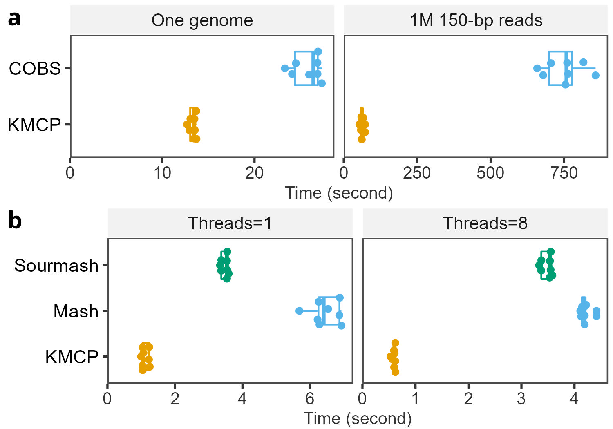

Searching benchmarks
Software, datasets and commands details.
Softwares
GTDB r202 representative genomes are used for tests:
- file size: 46.26 GB
- files: 47,894
- bases: 151.94 Gb
KMCP vs COBS
All k-mers are indexed and searched.
Database size and building time:
| cobs | kmcp | |
|---|---|---|
| database size | 86.96GB | 55.15GB |
| building time | 29m55s | 21min04s |
| temporary files | 160.76GB | 935.11G |
Searching with bacterial genomes or short reads (~1M reads).
KMCP vs Mash and Sourmash
Only FracMinHash (Scaled MinHash) (scale=1000 for Sourmash and KMCP) or MinHash (scale=3400 for Mash) are indexed and searched.
Database size and building time:
| mash | sourmash | kmcp | |
|---|---|---|---|
| database size | 1.22GB | 5.19GB | 1.52GB |
| buiding time | 13m30s | 40m39s | 7min59s |
| temporary files | - | - | 1.85GB |
Searching with bacterial genomes.
Result
